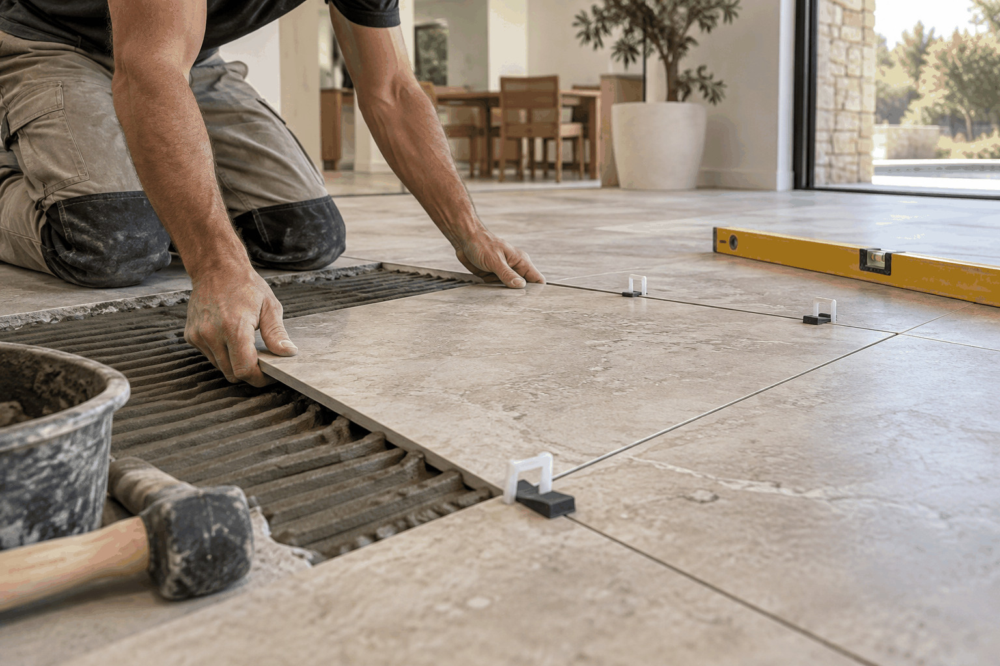

Tiling Adelaide
Tiling for the surfaces that shape your home.
Ellis Services Group provides tiling services for bathroom, kitchen and living spaces in Adelaide.

Plan the surface and finish
Share the room, tile type, existing surface and project stage so the work can be discussed clearly.
CALL 0425 170 688